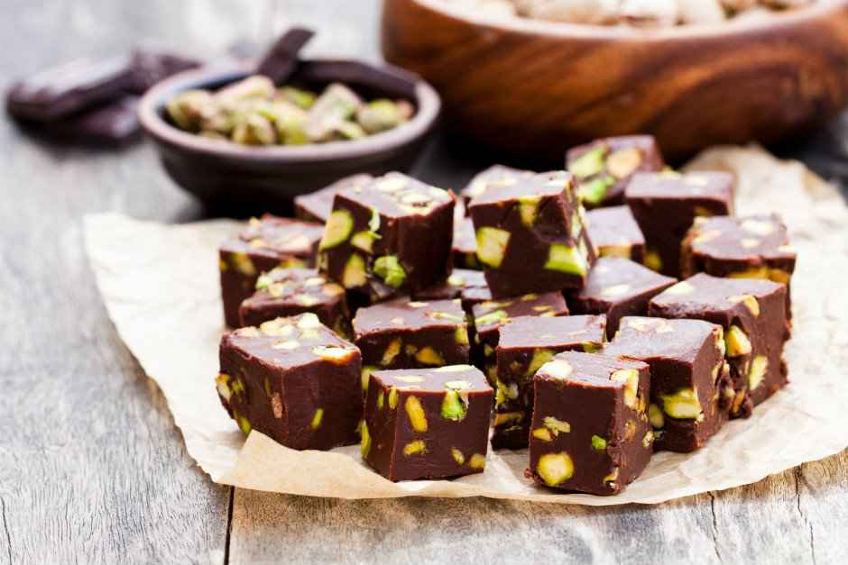

çikolatalı ve şam fıstıklı tadımlık lezzetler... Yalnızca 4 malzeme ile hazırlanan çikolata küpleri, renkli kağıtlarda veya kürdan batırılarak servis edilir. Özellikle kalabalık sofralarda yer verilen çikolata küpleri, doğum günü gibi özel etkinliklerde de sunulabilir.
Tarif: Rukiye Beyza Sarıkaya
Kaç Kişilik:4 kişilik Hazırlama Süresi:30 dakika Pişirme Süresi:10 dakika

Çikolata Küpleri Tarifi İçin Malzemeler.
350 gr bitter çikolata
150 ml krema
1 çorba kaşığı tereyağı
150 gr şamfıstık(Badem veya fındık da olabilir)
Çikolata Küpleri Nasıl Yapılır?
Bitter çikolatayı benmari usulü eritin.
Eriyen çikolatanın üzerine krema veya tereyağını ekleyip iyice karıştırıp tencereyi bir tezgaha alın.
Şamfıstıklarını havanda çok az dövüp irili ufaklı parçalara bölün